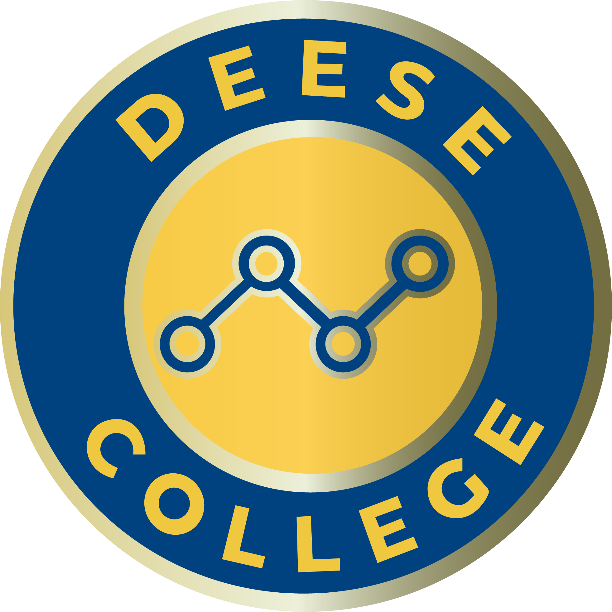
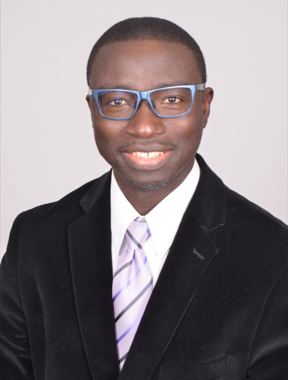
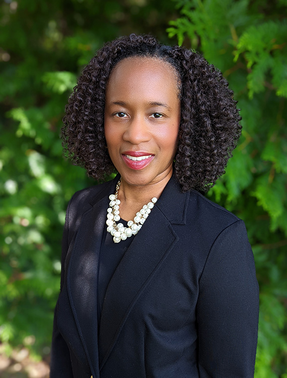
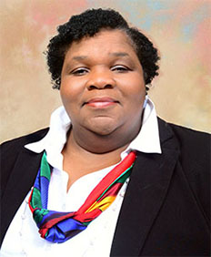

I am pleased to introduce the inaugural edition of the Deese Digest, a quarterly publication highlighting the people, partnerships, and progress shaping the Willie A. Deese College of Business and Economics at North Carolina A&T State University.
The momentum across the Deese College continues to accelerate. Our faculty are producing impactful scholarship that advances business knowledge, our students are earning prestigious recognition while preparing to lead in a rapidly changing global economy, and our partnerships continue to create transformative opportunities for experiential learning, innovation, and workforce development. These accomplishments reflect our unwavering commitment to being a place where excellence is expected and pride is the reward.
The Deese Digest offers a window into the remarkable work taking place throughout the Deese College and the meaningful impact we are making across North Carolina and beyond. Whether you are a student, alumnus, corporate partner, donor, or friend of the Deese College, I hope these stories inspire pride in what we have accomplished together and excitement for what lies ahead. Thank you for your continued support and engagement as we build the future of global business education.
Dean, Willie A. Deese College of Business and Economics · NC A&T State University
Dr. Scott Simkins, professor of economics at the Deese College, was featured on Marketplace — the nationally syndicated public radio program hosted by Kai Ryssdal and heard by millions of listeners daily. Dr. Simkins spoke to how artificial intelligence is reshaping the way macroeconomics is taught at the undergraduate level, and what that means for the next generation of business professionals entering an AI-driven economy.
His appearance signals the growing national profile of Deese College faculty and the college's commitment to being part of the most important conversations in business education today.







-
PwC hosted an AI faculty webinar led by Kisha D. Brown, PwC Manager of Entry Level Talent Acquisition, covering the human and AI skills firms now expect from new hires.
-
KPMG partnered with Deese on "Recalibrating the Curriculum for AI-Driven Jobs" — a faculty webinar series aligning Deese programming with evolving employer expectations.
-
U.S. Army HBCU-MI Program presented funded research collaboration opportunities available to Deese faculty, students, and alumni.
-
NC State Board of CPA Examiners held its board meeting in the Deese College Ballroom — a recognition of the college's standing as a hub for the regional accounting and finance community.
-
Deloitte hosted eight Deese students at its Charlotte office for a case competition led by Dr. Malissa Davis and Professor Stephen Peoples. Top placements: Shelby Barnes (1st), Donovan Smalls (2nd), and Lydia Morales (3rd).
-
PGA of America Carolinas visited campus to connect students with career pathways in the golf and sports business industry.
-
Providence College & The PhD Project funded faculty and doctoral student travel to a Case Writing Workshop, expanding Deese's case-teaching capacity.
-
Jul
12–
14Deloitte 4th Annual Future of Work Faculty Symposium HBCU educators convene at Deloitte University in Westlake, TX, on AI and the future of work — travel and lodging fully funded by the Deloitte Foundation. -
Jul
20–
24EPF Institute at NC A&T The Deese College hosts NCCEE's week-long, 40-hour Economics and Personal Finance Institute — equipping North Carolina teachers with the tools to deliver the state's required EPF course. In-person, 8AM–4PM daily in Greensboro. -
Oct
25–
Nov 1GHOE Centennial — The 100th Greatest Homecoming On Earth NC A&T celebrates its 100th Homecoming, the largest annual event in the Piedmont Triad, drawing 130,000+ attendees and generating more than $50 million in regional economic impact. Game day is October 31 vs. Elon University. -
Nov
8–
10"Engineering Trust" National FinTech Conference — Nashville Professor Collins Okafor (Accounting & Finance) serves on the multi-HBCU Conference Program Planning Committee.